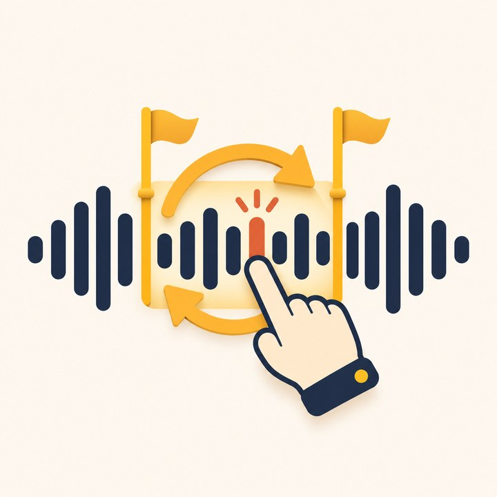

iPhone・iPad・Android の練習プレーヤー
聞こえるまで、
何度でも。
耳コピと楽器の練習のためのプレーヤーです。持っている音声ファイル・動画の音・録音を取りこみ、音程を変えずに遅くして、波形の上で選んだ所を繰り返し聴けます。
App Store・Google Play で配信予定買い切りで全部の機能が使えます。アプリ内課金・サブスクリプション・広告はありません。

こんな困りごとのために
速いフレーズが聞き取れない
速さ 0.25〜1.5 倍。遅くしても音程は変わりません。
同じ所を何度も探すのが面倒
波形を押して A と B。名前を付けたループを曲ごとにいくつでも。
キーを変えて合わせたい
音程 ±12 半音、セントでチューニングのずれも合わせられます。
少しずつ元の速さに近づけたい
だんだん速く: ループのたびに決めた分だけ速くします。
買ったのに復元できない
ききうつしは買い切りで、アプリ内課金がありません。
続きから練習したい
曲ごとに場所・速さ・音程・ループを覚えます。
できること
| 速さ・音程 | 0.25〜1.5 倍（0.05 刻み）・±12 半音・セント |
|---|---|
| ループ | 波形で A と B・名前つきで複数・マーカーに吸いつく・繰り返しの間・カウントイン |
| 練習 | だんだん速く・±5 秒・イヤホンとロック画面の操作 |
| 取りこみ | ファイル App の音声（mp3・m4a・wav・aiff・flac）・写真の動画の音・録音 |
| データ | 曲と録音は端末の中だけ・通信しない・アカウントなし・解析と広告なし |
Apple Music などの配信の曲（コピー防止つき）は取りこめません。
使い方・プライバシーポリシー・利用規約もご覧ください。